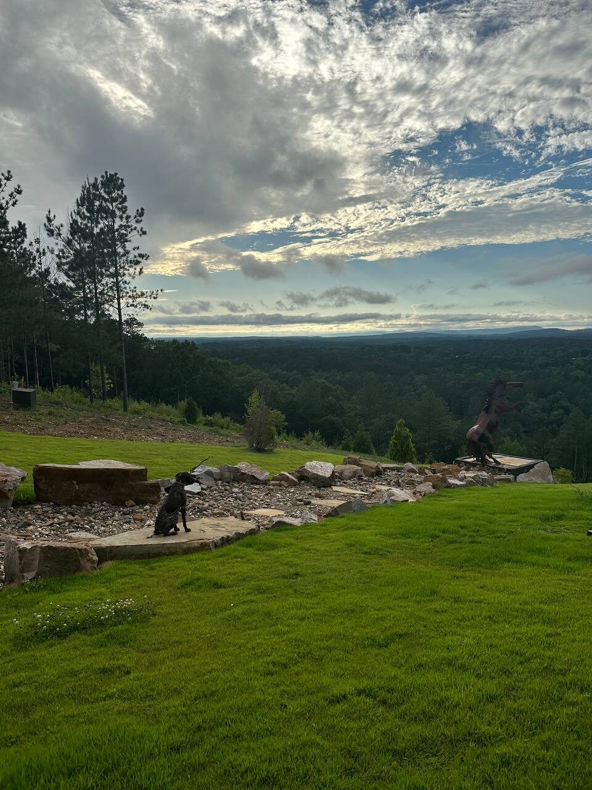
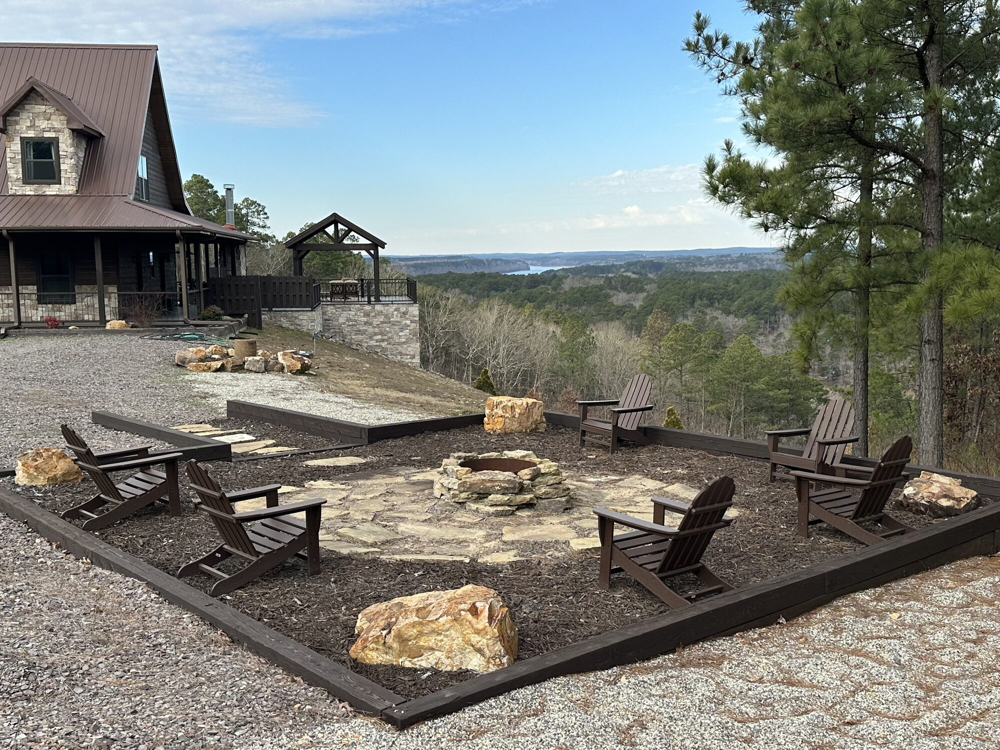
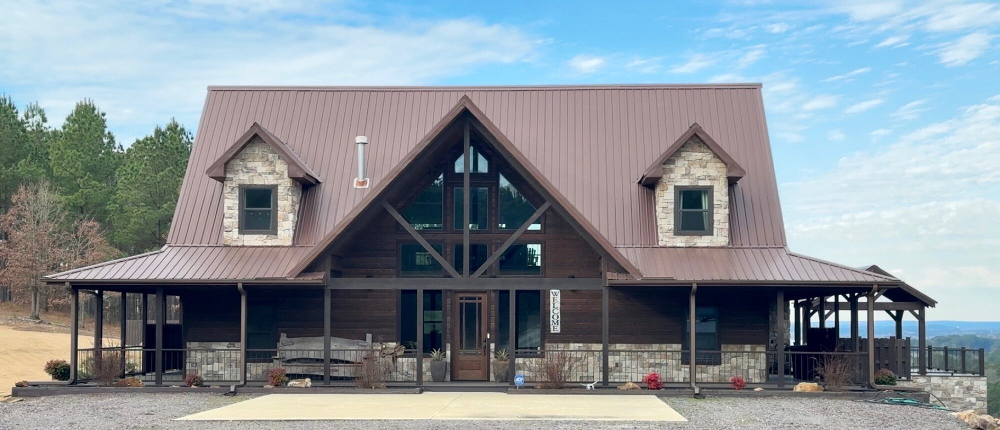
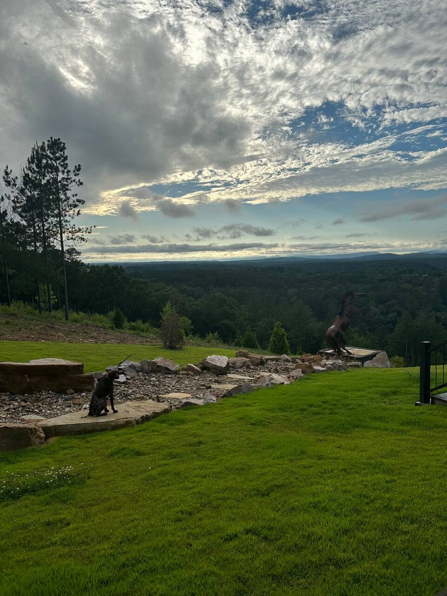
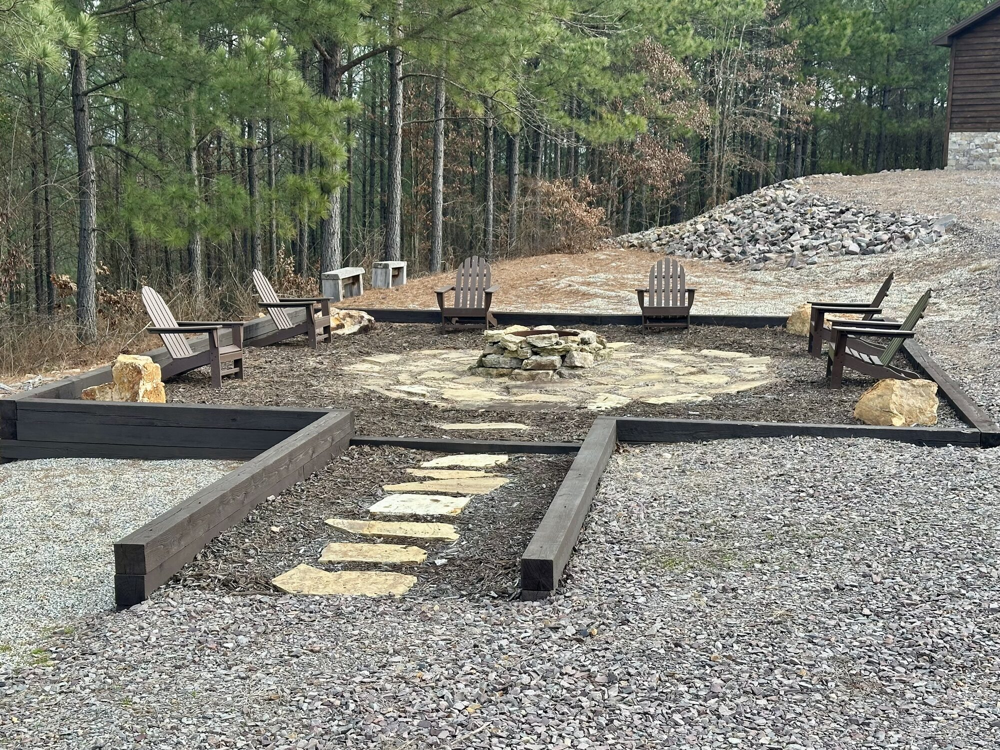
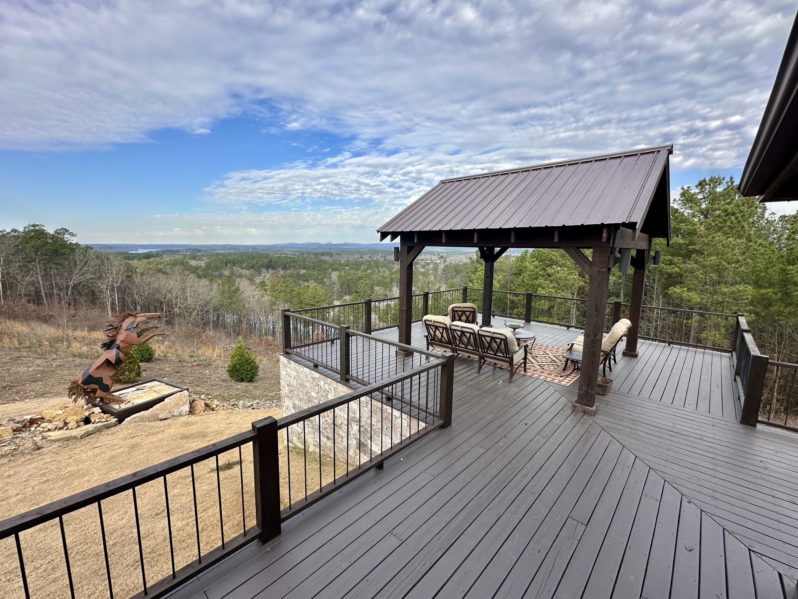

~30 min
Float the Caddo River
One of Arkansas's favorite float rivers. Spend a lazy summer day tubing or floating the easygoing Caddo Gap–to–Glenwood run — local outfitters in Glenwood handle tube rentals and shuttles.

Water, trails, and small-town Arkansas — here's what's waiting just beyond the deck.

A 9,500-acre clear-water lake in Pike County, Lake Greeson is the centerpiece of the area — known for outstanding, year-round fishing — bass, crappie, catfish, sunfish, and white bass — and water sports of every kind, from boating and kayaking to skiing and swimming. Two lakeside marinas — Kirby Landing Marina and Self Creek Lodge & Marina — sit just minutes away, and along with Daisy State Park they offer public boat ramps to launch from. It's easy to spend the day on the water and be back for the sunset.

One of Arkansas's favorite float rivers. Spend a lazy summer day tubing or floating the easygoing Caddo Gap–to–Glenwood run — local outfitters in Glenwood handle tube rentals and shuttles.

Near Murfreesboro, this state park is the only public diamond mine in the world where you keep what you find. Dig the 37-acre field and search for the real thing.

Miles of Ouachita National Forest trail for ATV/OHV riding and mountain biking, with direct trail access from the property. Ride out the door and into the mountains.

The lodge looks out right over the park, on the shore of Lake Greeson — hiking trails, kayaking, a boat ramp, and camping just down the hill.
The lodge sits in the heart of Ouachita National Forest country — one of the best riding and hiking regions in the state. Roll out onto the Bear Creek trail system straight from the property, or lace up for forest hikes, waterfalls, and overlooks scattered through the mountains.
Bring the ATVs and side-by-sides — direct trail access is one of the things that makes this spot special.
Stock up in nearby Kirby and Glenwood, grab a bite in Murfreesboro, and settle into the slower pace of the Ouachitas. It's the kind of country where the drive is part of the fun and the stars actually come out at night.